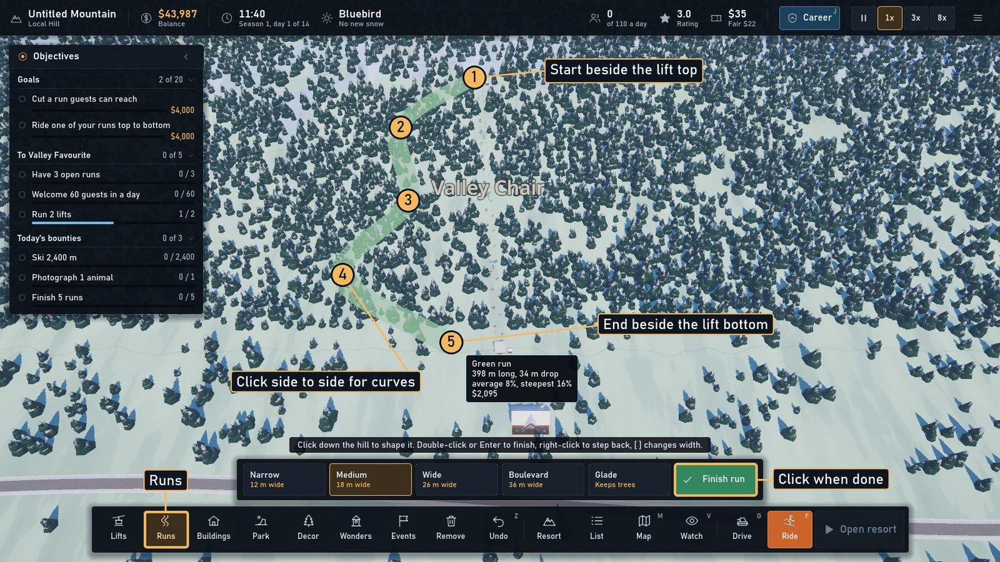
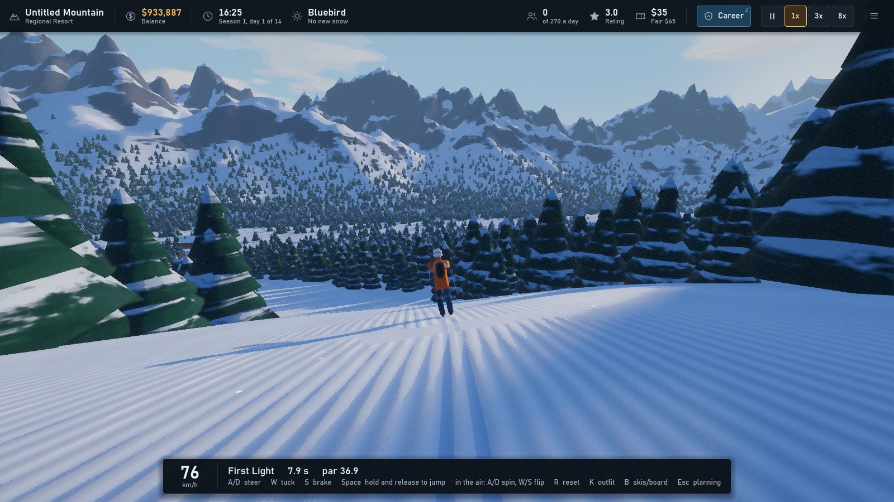

Starting the game
- Click the green Download for Windows button above and wait for it to finish.
- Open your Downloads folder and find Ski-Resort.
- Right-click it and choose Extract All, then Extract. Don't skip this one.
- Open the Peak Simulator folder and double-click Peak Simulator (the one that says Application).
- Type a name for your mountain and click Let's build.
The Next step card at the top left always tells you what to do, and its button takes you there. Press H in the game for help.
If Windows shows a blue warning, that's normal for a small game that isn't from a store. Click More info, then Run anyway.
If a window called "Project Manager" opens, the folder wasn't extracted. Close it and do step 3.
The game saves by itself every couple of minutes, and when you close it. Next time, just double-click it again.
Getting around
| Move | W A S D or the arrow keys |
| Look around | Hold the right mouse button and drag |
| Zoom | Mouse wheel |
| Undo | Z |
| Cancel or go back | Esc |
1. Build the lodge
- Click Buildings at the bottom, then Base lodge.
- Click a flat spot near the road. A crew drives out to build it, and you can carry on meanwhile.
2. Build a lift
- Click Lifts, then Double chair.
- Click the bottom of the lift, close to the lodge.
- Click the top, straight up the hill. About 300 to 400 m long is a good first lift, for roughly $15,000.
- Type a name for it, or click the name the game suggests.
3. Make your first run
A run is the path people ski down. You draw it from the top to the bottom, one click at a time.

- Click Runs. The snow changes color to show how steep it is:
- Green: easy
- Blue: medium
- Dark: hard
- Red: very steep, so go around it
- Pick a width. Medium is a good first choice.
- Click right beside the top of your lift. It snaps into place when you're close.
- Click a little farther down the hill. A path appears between your clicks.
- Keep clicking downhill. Click to the left and right to make curves. Curving across the hill makes the run gentler.
- Make the last click beside the bottom of the lift or the lodge, so people can get back.
- Press Enter or click the green Finish run button.
- Type a name and press Enter, or click the name the game suggests.
While you draw, a small box shows the difficulty, length and price. A 400 m Medium run costs about $2,100. A crew then clears the trees, and the run opens.
Fixing mistakes
- Last click was wrong: tap the right mouse button once.
- Don't like the finished run: press Z.
- To see why a run is closed, or rename it: click the run and look at the panel on the right.
| If it says | Do this |
|---|---|
| Too short | Make it at least 45 m long |
| Goes uphill in places | Always click lower than your last click |
| Too flat to ski | Start higher up, or take a steeper line |
| That's a cliff | Go around the red areas |
| Isn't yours yet | Stay on the lower part of the mountain for now |
| No lift gets guests to the top | Start the run closer to the lift top |
| The bottom doesn't lead to a lift or the lodge | End it closer to the lift bottom or the lodge |
4. Open the resort
When the crew finishes, click the green Open resort button. Guests arrive, ski and pay. Speed up time with 1x, 3x and 8x at the top right. At night, press N to skip to the next day.
5. Ski it yourself
Click one of your runs, then Ride this run.

| Steer | A and D |
| Go faster | W |
| Brake | S |
| Jump | Hold Space, then let go |
| Ride a lift when you're close | E |
| Switch skis and snowboard | B |
| Back to building | Esc |
What next?
- Keep following Next step. Click any goal under it to see how to do it. Goals pay you money.
- Click Resort to change the ticket price. It tells you what guests think is fair.
- Add a second run, a café, and a Cat garage to keep the snow smooth.
- Press V to sit back and watch.
- Press J later for new land, staff and upgrades. The Rank page shows how to unlock more.
- Birds too loud? Press Esc for Settings and turn down Birds.
If it runs slowly
The game lowers its own graphics if it notices. You can also press Esc for Settings, and set Graphics to Low.
If you already have an older copy
Close the game, download it again and play the new copy. Your resort carries over, since it isn't stored in the game's folder. Then delete the old folder.
To remove it
Delete the Peak Simulator folder. Nothing was installed. Your saved resort stays on the PC in case you come back.